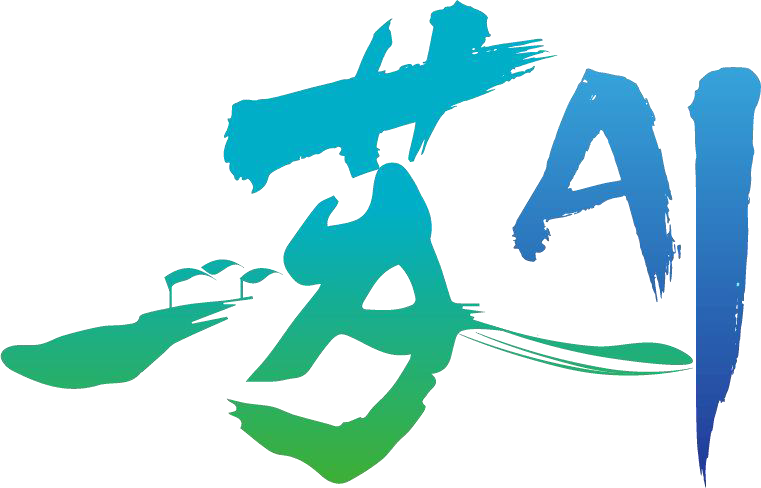
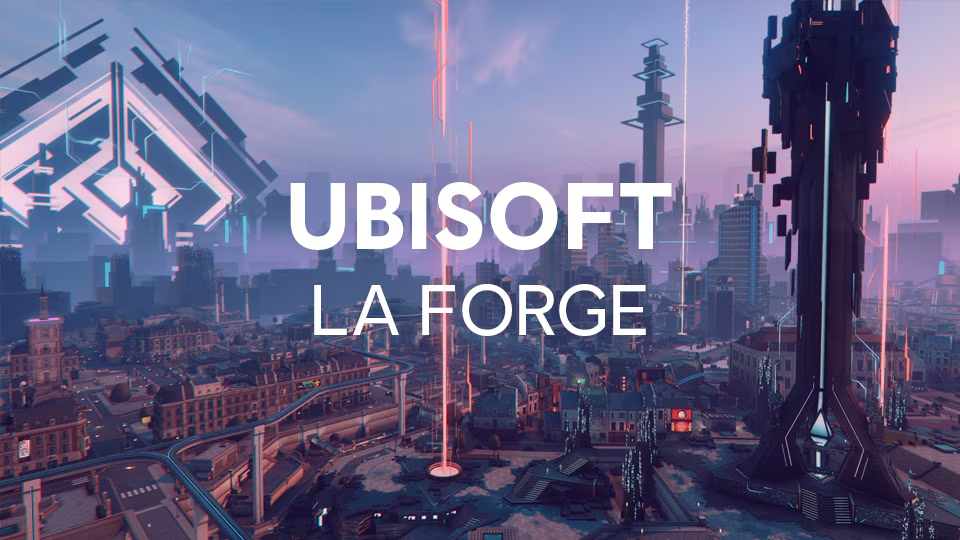

-
 University of Science and Technology of China C9 League · Project 985
University of Science and Technology of China C9 League · Project 985
School of AI & DS | 2025.9 - 2028.7
M.Phil in Intelligence Science and Technology
中国科学技术大学人工智能与数据科学学院智能科学与技术学术型硕士 -
 Southwest University Project 211
Southwest University Project 211
Yuan Longping Class, Hanhong College | 2021.9 - 2025.7
B.Eng in Computer Science and Technology
西南大学含弘荣誉学院袁隆平班计算机科学与技术工学学士 -
 University of California, Los Angeles QS Rank TOP 50
University of California, Los Angeles QS Rank TOP 50
Visiting Student in Data Science | 2022.9 - 2023.1
加州大学洛杉矶分校数据科学访问学生
Welcome to my homepage! 🥰
I completed my undergraduate studies in 2025 at the Top Talent Program - Yuan Longping Class, Hanhong College, Southwest University (西南大学拔尖人才培养计划), earning a B.Eng in Computer Science and Technology under the guidance of Prof. Xiaofang Hu.
Starting in September 2025, I will pursue an M.Phil degree in Artificial Intelligence at the School of Artificial Intelligence and Data Science, USTC (中国科学技术大学人工智能与数据科学学院), supervised by NSFC Distinguished Young Scholar Prof. Jingrun Chen, and I will also collaborate with Associate Researcher Congcong Zhu.
I did research internships at companies or institutes such as Ubisoft La Forge and iFlyTek Spark-LLM Team, and previously served as the algorithm leader and project manager of the SWU RoboMaster Team.
Currently a Kaggle Expert, I have served as a program committee member for the AAAI, and as a reviewer for IJCAI and IJCNN.
-
My research interests focus on:
- Physically Interactive World Models
- Feed-Forward and Generative 3D Vision
- Physics-Informed Multimodal Understanding
Github
Haoqin Hong's Github
Email
HaoqinHong@outlook.com haoqinhong@mail.ustc.edu.cn
Google Scholar
Haoqin Hong's Google Scholar
Address
Tianchen Road, High-tech West District, Chengdu, Sichuan Province, China, 611731
News
- 2026.2 🎉 I have established a long-term partnership with Ubisoft La Forge, focusing on AIGC in Game Assets.
- 2026.1 🎉 I was selected for the Tencent Games Engine Technology Research & Practice Program.
- 2025.11 🎉 My first-author paper was accepted by AAAI 2026.
- 2025.9 🎉 My coauther paper was accepted by Neurocomputing.
- 2025.9 🎉 I will start my M.Phil in Intelligent Science and Technology at USTC.
- 2025.4 🎉 I was selected as an Outstanding Graduate in Southwest University.
- 2024.7 🎉 I present at the World Congress on Computational Intelligence held in Yokohama, Japan.
- 2024.3 🎉 My first-author paper was accepted by IEEE IJCNN 2024.
- 2023.6 🎉 I have been admitted to the China Academy of Sciences Innovation Training Program.
Address Tianchen Road, High-tech West District, Chengdu, Sichuan Province, China, 611731
News
- 2026.2 🎉 I have established a long-term partnership with Ubisoft La Forge, focusing on AIGC in Game Assets.
- 2026.1 🎉 I was selected for the Tencent Games Engine Technology Research & Practice Program.
- 2025.11 🎉 My first-author paper was accepted by AAAI 2026.
- 2025.9 🎉 My coauther paper was accepted by Neurocomputing.
- 2025.9 🎉 I will start my M.Phil in Intelligent Science and Technology at USTC.
- 2025.4 🎉 I was selected as an Outstanding Graduate in Southwest University.
- 2024.7 🎉 I present at the World Congress on Computational Intelligence held in Yokohama, Japan.
- 2024.3 🎉 My first-author paper was accepted by IEEE IJCNN 2024.
- 2023.6 🎉 I have been admitted to the China Academy of Sciences Innovation Training Program.
Education Experience
Research and Internship Experience
Research Experience
-

Suzhou Key Laboratory of Artificial Intelligence, USTC
Graduate Research Student | 2024.9 - Present
苏州人工智能重点实验室研究生 -
Chongqing Key Laboratory of Brain-inspired Computing, College of AI, SWU
Undergraduate Research Student | 2022.3 - 2025.6
西南大学人工智能学院类脑启发计算重庆市重点实验室本科生 -
 Tencent Interactive Entertainment Group (IEG)
Tencent Interactive Entertainment Group (IEG)
Tencent Games Engine Technology Research & Practice Program | 2026.1 - present
Applications of World Models based on 3DGS in Game UGC Development
腾讯互动娱乐部门游戏引擎技术课题实践项目 -
 National Astronomical Observatory, Chinese Academy of Sciences
National Astronomical Observatory, Chinese Academy of Sciences
Leader of Innovation Training Program | 2023.3 - 2024.7
Generative Astronomical Multimodal Model for IR-Optical Cross-Retrieval
中国科学院大学生创新实践训练项目（"科创计划"）负责人
Internship Experience
-

Ubisoft La Forge | Ubisoft China
Student Researcher in Computer Graphics and Simulation | 2026.2 - Present
Physically Based Rendering Material Generation
育碧 La Forge 全球科研中心学生研究员
-
 Spark-LLM Team | iFlyTek AI Research Institute
Spark-LLM Team | iFlyTek AI Research Institute
Assistant Research Algorithm Engineer in Multimodal-LLMs Post-Training | 2025.9 - 2026.1
(a) VLM Post-Training with SFT & RFT, (b) Agentic-RL and (c) Reward Model
讯飞星火大模型团队强化学习后训练方向研究型实习生
Publications & Awards
Publications
Articles (* Equal contribution, † Corresponding author, ‡ Project leader)
Physically Interactive World Model
Physics-Informed Deformable Gaussian Splatting: Towards Unified Constitutive Laws for Time-Evolving Material Field.


Haoqin Hong*, Ding Fan*, Fubin Dou, Zhi-Li Zhou,
Haoran Sun, Congcong Zhu†, Jingrun Chen†.
AAAI-26 · CCF-A Conference

-
CCSPNet-Joint: Efficient Joint Training Method for Traffic Sign Detection Under Extreme Conditions.
Haoqin Hong, Yue Zhou†, Xiangyu Shu, Xiaofang Hu. IJCNN 2024 Oral · CCF-C Conference
-
Attaining Hardware-Efficient Inference in Memristor-Based Transformer Accelerator via Network Redesign.
Junze Xu, Haoqin Hong, Yue Zhou† , Xiaofang Hu, Shukai Duan. Neurocomputing · JCR Q1 · CCF-C Journal
Chinese Invention Patent
- Speech Recognition System and Method Based on Lightweight Transformer Network.
- Text Sentiment Detection System and Method Based on Memristor.
Selected Awards
Honors and Awards
- Outstanding Individual in Innovation Capability in Chongqing.
- Outstanding Graduates in Southwest University.
- Outstanding Undergraduate Thesis of Southwest University.
- Southwest University Hanhong Foundation Student Success Scholarship.
(Top 40 among graduates of all degree levels) - Southwest University First Class Scholarship.
Competition Awards
- 🥉 Bronze Medal in Kaggle Research Competition: NeurIPS - Open Polymer Prediction 2025.
- 🥉 Bronze Medal in Kaggle Research Competition: CVPR 2025 Workshop - Image Matching Challenge.
- 🥉 Bronze Medal in Kaggle Research Competition: Google - Fast or Slow? Predict AI Model Runtime.
- 🏅 National First Prize in the DJI RoboMaster University League.
- 🏅 National First Prize in the China Robotics and Artificial Intelligence Competition.
- 🥈 National Second Prize in the China/Contemporary Undergraduate Mathematical Contest in Modeling.
- 🏅 Provincial First Prize in the National Undergraduate Electronics Design Contest.
Additional Information
Open-Source Projects
- Awesome-Physically-Interactive-World-Models

- RoboMaster-SLAM: Point-LIO & MID-360 Sentinel Navigation Solution

Research Collaborator
- Zhi-Li Zhou (Ph.D in Physics & Mathmatics at UIUC) @ Theoretical Physics
- Yuzhuo Chen (M.Eng in CS at USTC) @ Video Generation